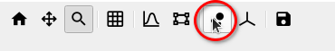

SliceViewer Testing¶
Introduction¶
The Sliceviewer in Workbench has the joint functionality of the SpectrumViewer and SliceViewer from MantidPlot. So while the advanced use cases for multi-dimensional diffraction data are important to test, it is also worth checking more basic uses, for example opening a Workspace2D and examining the subplots and dynamic cursor data.
See here for a brief overview of the Sliceviewer.
Data¶
- Load 2D data (normal MatrixWorkspace), simply load
CNCS_7860_event.nxsfrom the TrainingCourseData. We will also load in some SXD data later on, it is good to test the Sliceviewer on both MatrixWorkspaces as the CNCS data was taken in event mode and the SXD data in histogram mode. - Create fake 4D data and take a 3D and 2D cut:
from mantid.simpleapi import *
md_4D = CreateMDWorkspace(Dimensions=4, Extents=[-1,1,-1,1,-1,1,-10,10], Names="H,K,L,E", Frames='HKL,HKL,HKL,General Frame',Units='r.l.u.,r.l.u.,r.l.u.,meV')
FakeMDEventData(InputWorkspace=md_4D, PeakParams='500000,0,0,0,0,3') # 4D data
# Create a histogrammed (binned) workspace with 100 bins in each of the H, K and L dimensions
mdHisto_3D = BinMD(InputWorkspace=md_4D, AlignedDim0='H,-1,1,100', AlignedDim1='K,-1,1,100', AlignedDim2='L,-1,1,100') # 3D cut
mdHisto_2D = BinMD(InputWorkspace=md_4D, AlignedDim0='H,-1,1,100', AlignedDim1='K,-1,1,100') # 2D cut
- Create an MD workspace with non-orthogonal axes:
from mantid.simpleapi import *
# SXD23767.raw is available in the TrainingCourseData from the downloads page
SXD23767 = Load(Filename='SXD23767.raw', LoadMonitors='Exclude')
# Set some UB with angles we can play with
SetUB(SXD23767, 1,1,2,90,90,120)
SXD_MD_nonortho = ConvertToDiffractionMDWorkspace(InputWorkspace='SXD23767', OutputDimensions='HKL')

- Create PeaksWorkspaces for the SXD data:
- Open instrument viewer by right-clicking on the workspace``SXD23767``.
- On the Pick tab, select the
 “Add a single crystal peak” button.
“Add a single crystal peak” button. - Click on an intense bragg peak on the detectors, and then click on one or many of the intense peaks in the produced mini-plot. Repeat for a few different bragg peaks across the detectors.
- Notice that this has produced a
SingleCrystalPeakTable. - Create another peak table which we will use to integrate (note in order to index these peaks we find the actual UB matrix which happens to be orthogonal - this is not a problem for test purposes)
FindSXPeaks(InputWorkspace='SXD23767', PeakFindingStrategy='AllPeaks', AbsoluteBackground=1500, ResolutionStrategy='AbsoluteResolution', XResolution=500, PhiResolution=5, TwoThetaResolution=5, OutputWorkspace='peaks')
FindUBUsingLatticeParameters(PeaksWorkspace='peaks', a=5.65, b=5.65, c=5.65, alpha=90, beta=90, gamma=90, FixParameters=True)
IndexPeaks(PeaksWorkspace='peaks')
- Create an Integrated PeaksWorkspace:
peaks = mtd['peaks']
integrated_peaks = IntegratePeaksMD(InputWorkspace='SXD_MD_nonortho', PeaksWorkspace='peaks',\
PeakRadius=0.12, BackgroundOuterRadius=0.2, BackgroundInnerRadius=0.16)
Tests¶
Remember to SliceView MatrixWorkspaces and 2D,3D,4D and non-orthogonal MD objects.
1. Viewing Data¶
- For the data types above:
- Change the number of bins displayed
- Move the sliders (this applies only to 3D and 4D MD workspaces - i.e.
SXD_MD_nonortho,md_4D,mdHisto_3D) - Edit color limits, colormap, scale(lin/log), etc.
2. Toggle gridlines on/off¶
- For normal and non-orthogonal axes data
3. Select Axes¶
- Change the axes that are displayed by selecting the relevant
XandYaxes in the top left. This is more interesting for higher dimension data.
4. Non-orthogonal view¶
- For the
SXD_MD_nonorthoworkspace, the non-orthogonal view button (see below) should be enabled - clicking this should also turn on grid lines. When viewing the H and K axes you should see the gridlines are no longer perpendicular to each other.

- This tests that the sliceviewer gets the correct basis vectors for an
MDHistoobject from a non-axis aligned cut.
ws = CreateMDWorkspace(Dimensions='3', Extents='-3,3,-3,3,-3,3',
Names='H,K,L', Units='r.l.u.,r.l.u.,r.l.u.',
Frames='HKL,HKL,HKL',
SplitInto='2', SplitThreshold='10')
expt_info = CreateSampleWorkspace()
ws.addExperimentInfo(expt_info)
SetUB(ws, 1,1,2,90,90,120)
BinMD(InputWorkspace=ws, AxisAligned=False,
BasisVector0='[00L],r.l.u.,0,0,1',
BasisVector1='[HH0],r.l.u.,1,1,0',
BasisVector2='[-HH0],r.l.u.,-1,1,0',
OutputExtents='-4,4,-4,4,-0.25,0.25',
OutputBins='101,101,1', OutputWorkspace='ws_slice', NormalizeBasisVectors=False)
- Run the above code and open
ws_slicein the sliceviewer. - Check that non-orthogonal view is enabled on opening - however when clicked the gridlines are orthogonal (in this case 110 is orthogonal to 001).
- Check that changing the properties of the workspace that governs the support for the non-orthogonal transform closes the sliceviewer window.
- Open
wsfrom the above test script in the sliceviewer - Run
ClearUB(ws)(it should close sliceviewer with warningproperty supports_nonorthogonal_axes is different...) - Instead of clearing the UB you can also replace the workspace with a workspace of a different frame that doesn’t support the non-orthogonal view (e.g. QLab)
ws = CreateMDWorkspace(Dimensions='3', Extents='-6,6,-4,4,-0.5,0.5',
Names='Q1,Q2,Q3', Units='Ang-1,Ang-1,Ang-1',
Frames='QLab,QLab,QLab',
SplitInto='2', SplitThreshold='50')
- Check that the non-orthogonal view is disabled for non-Q axes such as energy
ws_4D = CreateMDWorkspace(Dimensions=4, Extents=[-1, 1, -1, 1, -1, 1, -1, 1], Names="E,H,K,L",
Frames='General Frame,HKL,HKL,HKL', Units='meV,r.l.u.,r.l.u.,r.l.u.')
expt_info_4D = CreateSampleWorkspace()
ws_4D.addExperimentInfo(expt_info_4D)
SetUB(ws_4D, 1, 1, 2, 90, 90, 120)
- When the Energy axis is viewed (as X or Y) the non-orthogonal view is disabled. The button should be re-enabled when you view two Q-axes e.g. H and K.
5. Cursor Tracking¶
- Toggle “Track Cursor” on/off and check the cursor data makes sense
- For a MatrixWorkspace (e.g.
SXD23767) there is much more information than for an MD object. See Cursor Information Widget for more details.
6. Peak Overlay¶
This functionality only applies only to 3D MD workspaces - specifically you should test this on the SXD_MD_nonortho workspace.

- Select the peak overlay button to choose which PeakWorkspace/s to overlay.
- Click on different peaks in the peak sorting table to zoom in on a peak.
- Try overlaying multiple peaks workspaces
- Overlay Integrated peaks and observe the peak radius and background shell (see Calculations section of IntegratePeaksMD v2) as displayed in the image below.
- Click on a column title in the peak table to sort by that value, such as
DetID - Zooming in on peaks, and check that the data and peak move together
- Repeat step 2. (Select Axes) with peaks shown
- Repeat these instructions with non-orthogonal view enabled.
- Peak overlay should not be shown for 2D data

7. Toolbar buttons for changing axis limits¶
- Home
- Pan + Stretch
- Zoom (dynamic rebinning to
_svrebinnedworkspace for MD workspace) - both by selecting region with mouse and scrolling
8. Line subplots and Region of Interest integration¶
(this functionality is disabled when non-orthogonal view is enabled)

- Select the toolbar button for region of interest integration
- Draw a shape to integrate over on the image and notice the line subplots change
- Test the keyboard options in the bottom status bar message to output to workspaces
- Output the cuts displayed on line-subplots, for axis: x = X , y = Y, c = Both
- Output slice over the region of interest box: r = roi
- Also, test that the basic Line-subplots toolbar button (to the left of ROI integration button) works.
- Check keyboard options for cuts displayed on line-subplots, for axis: x = X , y = Y, c = Both

9. Save image¶
- Use the Save image toolbar button, in many instances, such as with peaks overlaid
- In future there will also be a toolbar button to copy the image to clipboard
10. Resizing¶
- Play around with resizing the window and adjusting the size of the peak table**
11. Alter the underlying workspace¶
- Delete the workspace and Sliceviewer should close
- Rename the workspace and Sliceviewer should stay open and continue to work
- Change the data in the workspace by cropping or running some algorithm (e.g. double the data
SXD_MD_nonortho *= 2) - Delete rows or re-integrate a PeaksWorkspace that is overlaid.